Lemon Poppy Seed Cake
– raw, vegan, gluten-free –
In the past few days I had to make quite a bit of almond milk, and in my weirdness, I popped all the skins off of the almonds before I made the milk. It’s not required I just find it therapeutic for some reason. After making the nut milk, I was left with some of the most beautiful, pure white almond pulp. I knew this pulp had a special calling and that to make this Lemon Poppy Seed Cake.
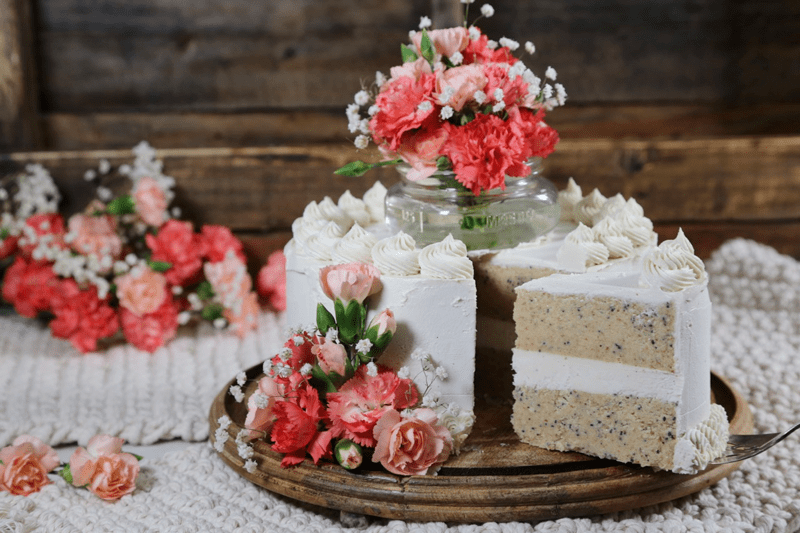
The cake didn’t come out as white as I had envisioned due to the date paste but man oh man, is it delicious. To keep it pure white, I will play with a different sweetener next time.
I realize that 8 cups of almond pulp is quite a bit but I promise you, it is worth your time and effort to collect it so you can make this creation (which was inspired by Cafe Gratitude). Keep in mind that you don’t have to make gallons of almond milk all at once to acquire 8 cups of pulp… unless you feel so inspired. And SHOULD you go this route, may I recommend making almond milk in a juicer?! Click (here) to learn how. This technique will save your poor little patties from all that squeezing.
If you don’t feel that ambitious, every time you make almond milk, measure the pulp and place it in a freezer-safe container. Over time you will soon build up your supply. Where there is a will, there is a way. And I hope that your “will” to make this cake is strong enough to find a way.
Key Ingredients & Techqinue Tips
Almond Pulp
I have already touched on this ingredient up above but what I didn’t mention was the fact that you don’t want to substitute it for any other ingredient. Almond pulp produces a unique texture to cakes in the raw food world. If you were to use just ground almonds, the cake would be heavy and dense.
Poppy Seeds
I have made this cake many times but this last time I found myself without enough poppy seeds to make the cake. I didn’t have time to run to the store so I used basil seeds instead. The basil seeds that are used for eating are the seeds from the sweet basil plant, Ocimum basilicum. They are also called Thai basil seeds, falooda, sabja, subza, selasih, or tukmaria.
Sweet basil seeds are a similar size as chia seeds. The difference is basil seeds are completely black and tear-shaped, whereas chia seeds are typically mottled shades of grey with brown and have a more rounded shape. Like chia, basil seeds become gelatinous when soaked in water. They are used in drinks in many Asian countries for thickening as well as for health. These tiny seeds are reported to have antioxidant, anticancer, antiviral, antibacterial, antispasmodic and antifungal properties.
Date Paste
Date paste plays a couple of rolls in this recipe. First off, it works as a binder, meaning it helps hold all the ingredients together. The second function is for providing a natural sweetener to the cake. I haven’t experimented with other liquid or dry sweetener but I am sure I will in time. So for now, stick with what we know works best.
Mixing & Blending
When making the cake batter, I highly suggest mixing the ingredients together in a mixer, not a food processor. This keeps the texture more on the fluffy/light side. The first step in the recipe is to blend the date paste with a few other ingredients, for that step, I used the whisk attachment. The key is to mix it until the date paste almost starts to turn a softer color. Once I started adding in the almond pulp and other ingredients, I switch over to the paddle attachment.
Pan Choice
You can use any depth and width of the pan that you want or have on hand. The wider the pan, the shorter the cake will be. Springform pans work well. I used a pan that had a removable base. Regardless of which pan you choose, it’s nice to have two of the pans since most pans won’t be able to handle the overall height of the cake with all the layers. If you only have one pan, don’t sweat it. You will just have to assemble the cake in two steps instead of one.
This cake is actually very easy to make. Thee are a few steps but you will learn a lot of wonderful techniques that will help you in with future raw recipes. I hope you enjoy, blessings, amie sue
Ingredients:
yields 8+” double-layer cake
Cake:
- 2 1/4 cups (675 g) packed date paste
- 3/4 cup (173 g) cold-pressed coconut oil, melted
- 3 Tbsp (25 g) vanilla extract
- 1 tsp (7 g) Himalayan pink salt
- 8 cups (920 g) packed, moist almond pulp
- 1/4 cup (75 g) almond milk
- 3/4 cup (165 g) fresh lemon juice
- 1/3 cup (50 g) poppy seeds
Frosting:
- 2 cups raw cashews, soaked 2 hours
- 1 1/4 cups (284 g) almond milk
- 3/4 cup (170 g) lemon juice, fresh
- 3/4 cup (235 g) light amber colored maple syrup
- 1 tsp (5 g) vanilla extract
- 1/8 tsp (<1 g)Himalayan pink salt
- 3 Tbsp (20 g) lecithin powder
- 1 cup raw coconut oil, melted
Preparation:
Cake batter:
- Using a MIXER; add the date paste, coconut oil, vanilla, and salt.
- Make sure the date paste and coconut oil are the same temperatures. If you have date premade and stored in the fridge or freezer (like me), bring it to room temp otherwise the coconut oil will clump up.
- You can use a food processor, but the next step I recommend a mixer… so why dirty both machines?
- Start mixing at a low-speed first than higher until you have a creamy and very smooth consistency.
- This will take a few minutes. Allow more time if necessary.
- You want a light, whipped and creamy consistency.
- This process can take 5-15 minutes.
- Turn the mixer off and add the nut pulp/flour, almond milk, and lemon juice.
- Begin mixing at a low speed.
- Mix for 5 minutes or until all ingredients are well incorporated.
- Increase speed to medium or high and continue mixing for 5-15 minutes. Stop to scrape sides often.
- If the batter is really dry feeling, add a touch more almond milk. This will depend on how moist your almond pulp is.
- The cake batter should be soft in consistency and rather light to the touch.
- Transfer the batter to a large bowl and with your hand’s mix in the poppy seeds.
- Divide the batter into 2 equal parts… roughly 4 1/4 cups. Set aside.
Frosting:
- After the cashews are done soaking, drain and discard the soak water.
- In a high powered blender combine the; cashews, almond milk, lemon juice, sweetener, vanilla, and salt. Blend until smooth and creamy (3-5 minutes)
- While your blender is running, drizzle in the coconut oil and then slowly add the lecithin. Blend well but don’t over process.
- Proceed to cake assembly directions.
Cake Assembly:
- Lightly grease the cake pan with a little coconut oil. Use a pan with a removable bottom for ease of removing the cake layers.
- Place one portion of the batter on the bottom of the pan.
- Spread an evenly, flat layer.
- Keep the remaining cake portion out at room temperature until ready to use.
- Pour 2 1/2 – 3 cups of liquid frosting onto the first cake layer. This will be the middle layer of the cake.
- Place the cake pan in the freezer until frosting is firm to the touch (1-2 hours).
- Pour the remaining frosting in a container, and set in the freezer until firm (1-2 hours). Move to fridge once set, don’t allow it to get solid.
- If the frosting freezes, that’s ok. Just remove and place on the counter to soften. Keep an eye on it though so it doesn’t get too soft.
- Remove cake pan from freezer. Take the remaining portion of cake batter and spread evenly on top of the middle layer of frosting.
- Set cake back in the freezer for 20-30 minutes.
- Freezing the cake will make the frosting step much easier. Otherwise, small crumbles of cake may get mixed up in the frosting.
- Remove cake from freezer and then from the pan.
- Frost and decorate the cake to your liking.
- This cake can last up to 5 days in the fridge or longer in the freezer.
- If freezing, be mindful of how you decorate it. You may want/need to do the final decorating on the day of serving.
- Be sure to keep the cake sealed so it doesn’t absorb fridge or freezer odors.
-
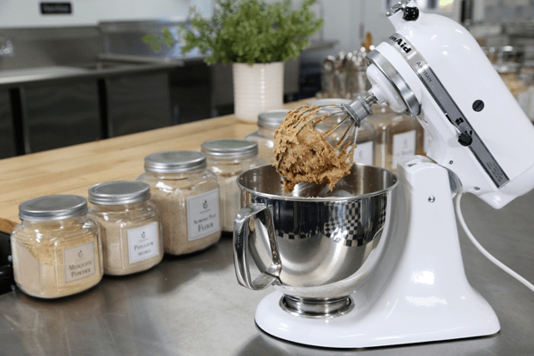
-
Start by blending (with whisk attachment) the date paste with coconut oil, vanilla, and salt.
-
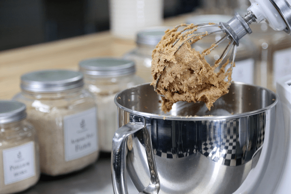
-
Blend until creamy and a bit lighter in color.
-
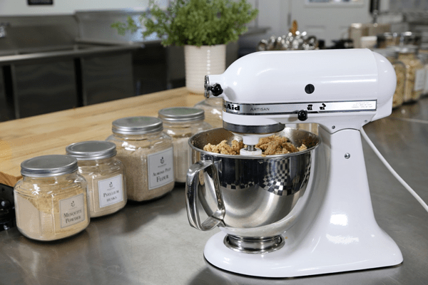
-
Use the paddle attachment when adding in the remaining ingredients.
-
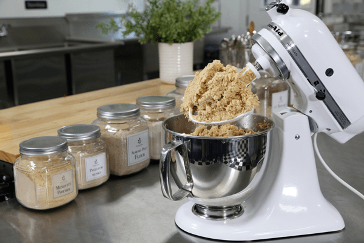
-
Sneak peak at the texture that we are aiming for.
-
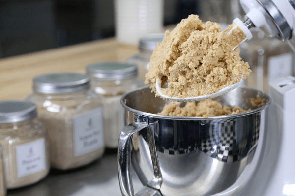
-
The batter should appear light and fluffy in texture.
-
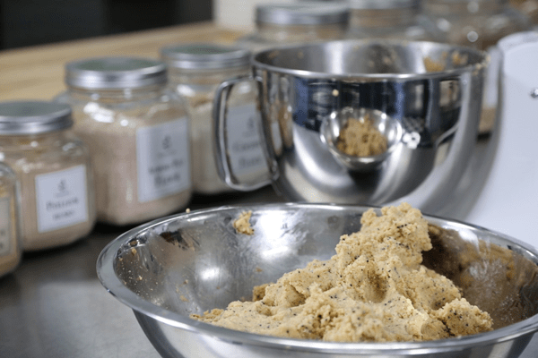
-
Transfer the batter to a bowl and hand mix in the poppy seeds.
-
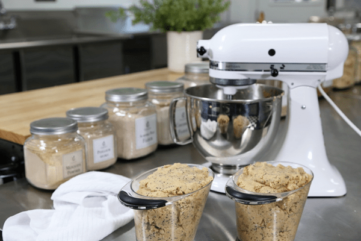
-
Divide the batter into two equal parts.
-
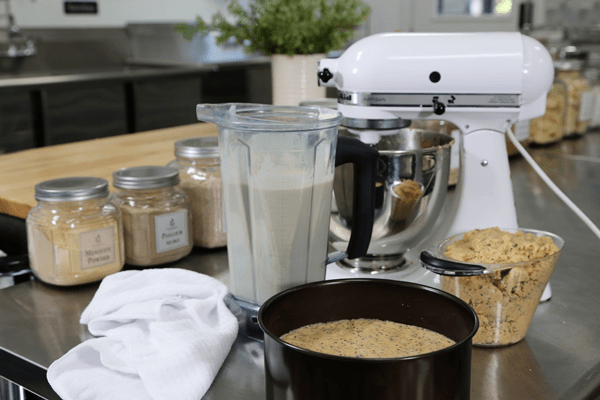
-
Make the frosting and while liquid, pour 2 1/2 cups of the frosting on top.
-
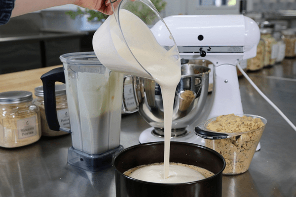
-
Make the frosting and while liquid, pour 2 1/2 cups of the frosting on top.
-
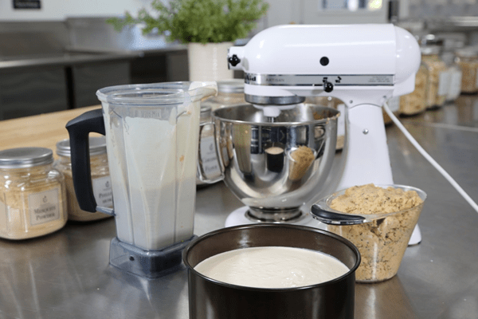
-
After adding the frosting, slip in the freezer to firm up.
-
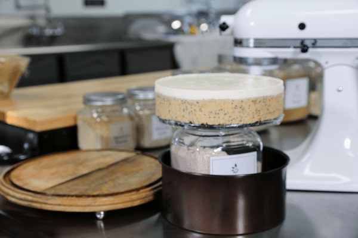
-
My pan wasn’t tall enough to handle all layers at once. To remove from the pan, place the pan on a jar or container that is smaller in size then the base of the pan. With slight downward pressure, remove the outer pan ring.
-
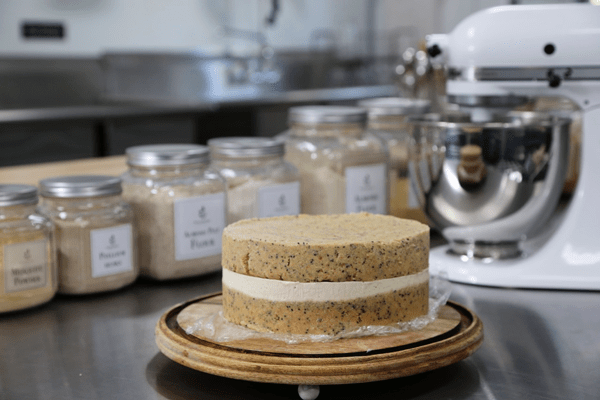
-
After the bottom layer of the cake has been removed from the pan, place it on a plate. Create the second cake layer in the same pan, removing it after it has sat in the freezer for about 30-60 minutes. Remove then gently place on top of the cake.
-
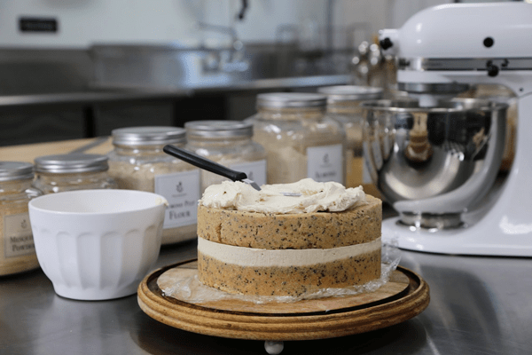
-
Start the frosting process.
-
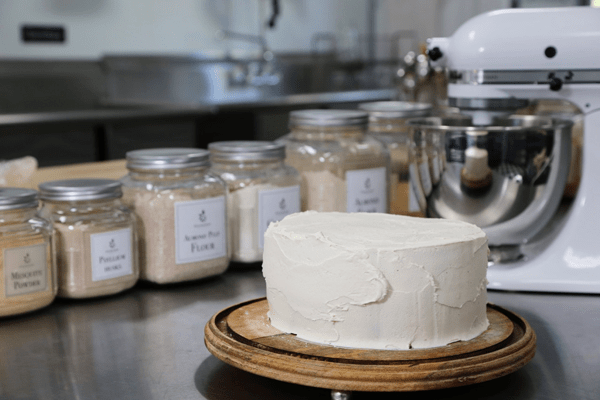
-
I created a rough layer of frosting…
-
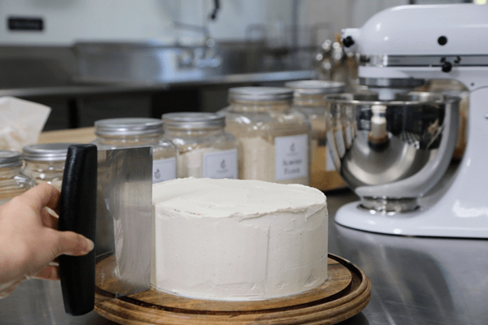
-
Then I slightly evened it out with a food scraper. I wanted the cake to appear country rustic so I didn’t smooth it to perfection.
-
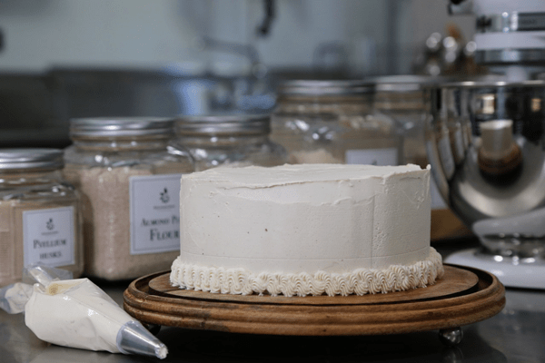
-
Pipe or not to pipe… that is up to you.
-
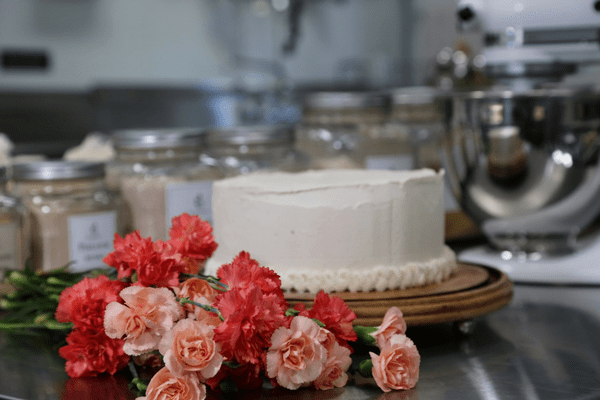
-
Select some fresh flowers to decorate with.
-
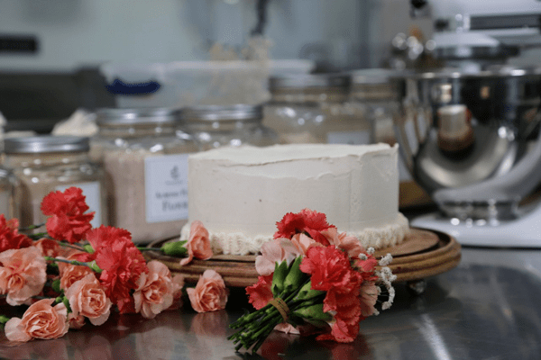
-
Here I am creating a small bouquet to place in a jar of water that will sit on the top of the cake.
-
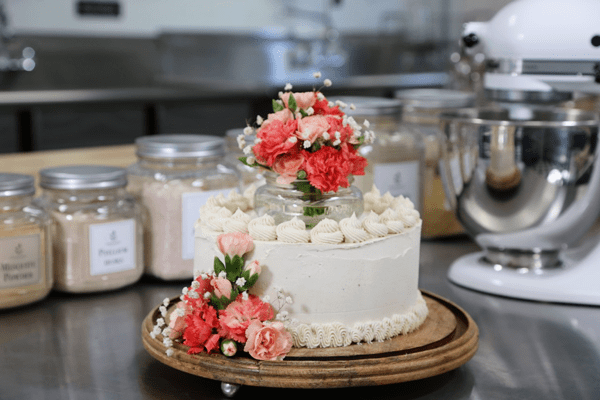
-
I added a little spray of flowers on the side of the cake.
-
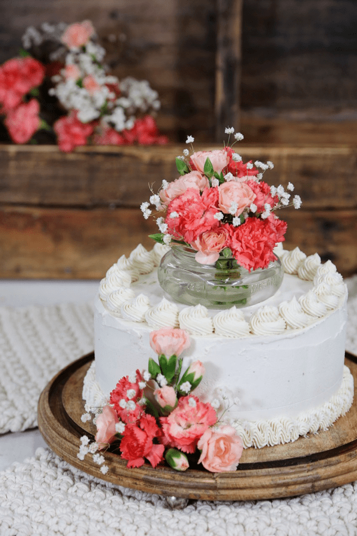
-
Now, sit back and enjoy your creation.
-
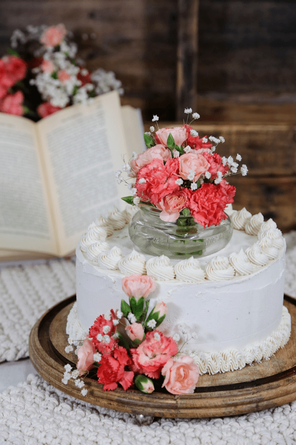
-
I mean really take in the beauty.
-
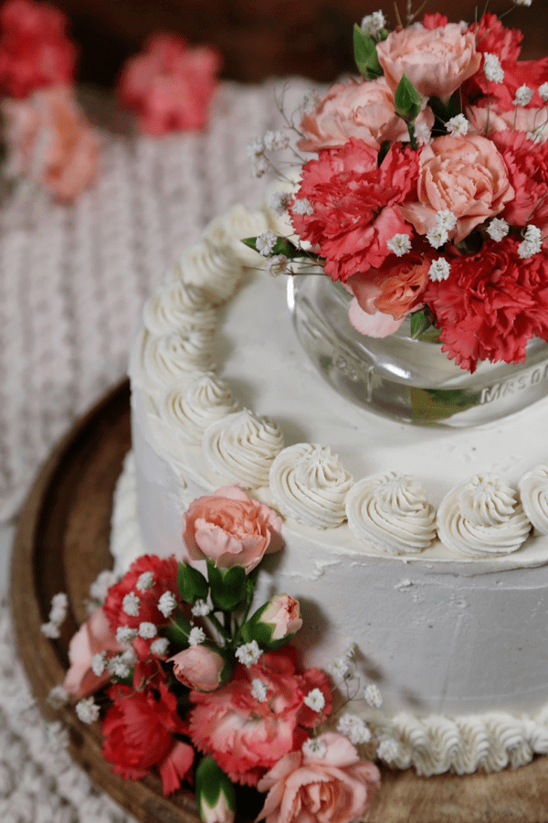
-
I snapped a slight downward shot so you could see the top a little bit batter.
-
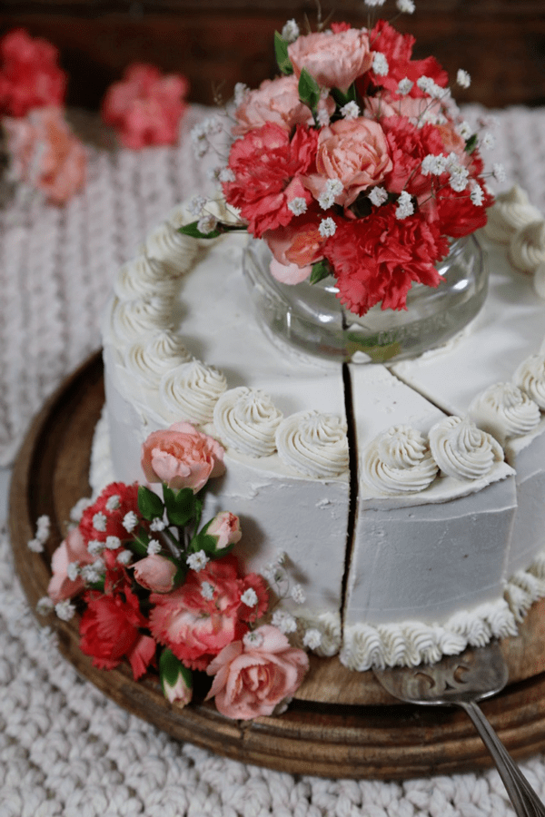
-
Making that first cut into the cake is always nerve racking. :)
-
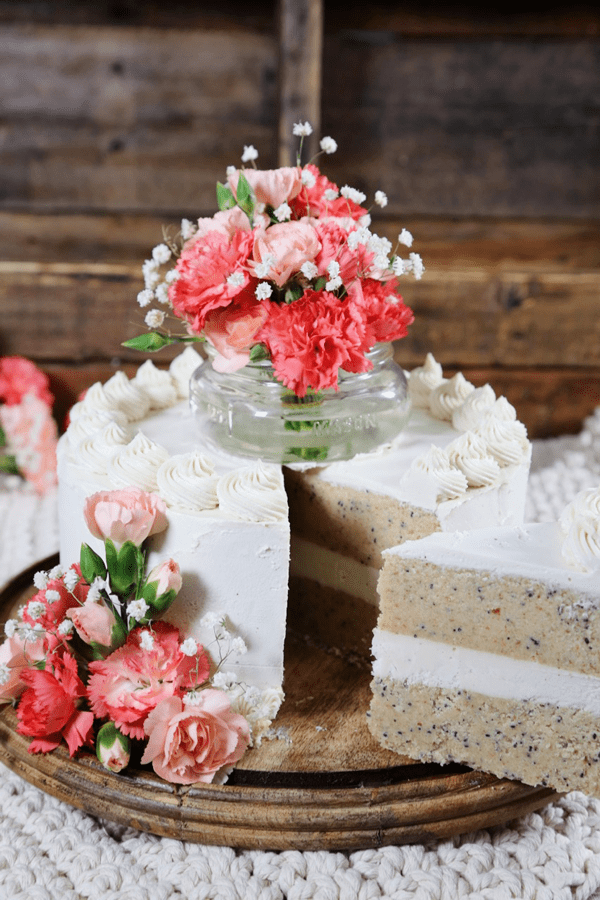
-
Ahhhh, it turned out beautifully!
© AmieSue.com